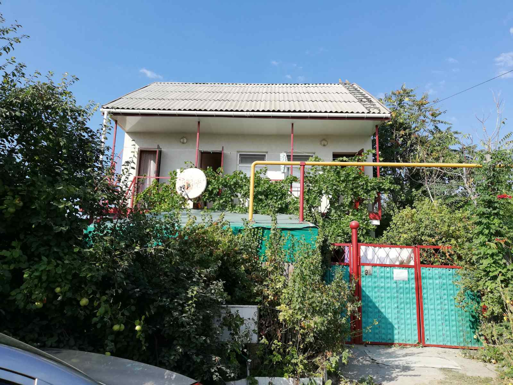

Уютный домик — частная усадьба на берегу Черного моря с. Поповка, западное побережье Крыма.
У нас Вы сможете отдохнуть всей семьей, перезагрузиться от городской суеты, погреться на южном солнышке и понежиться в волнах чистейшего моря. В нашем доме вы будете окружены заботой и вниманием.
Наш уютный домик расположен на первой улице от моря, и от главных ворот до кромки моря пешком менее 5 минут.
Дворик рассчитан на комфортное пребывание гостей.
Кухня на территории со всем необходимым позволяют самим готовить еду в любое время, так же есть возможность приготовления блюд на мангале и в казане. Посуда в ассортименте и в свободном доступе. Холодильник расположен на кухне. Есть резервуар с очищенной питьевой водой, которую мы регулярно заказываем у поставщика.
В комнатах есть удобства. Душевые и туалеты новой постройки, горячая вода подается круглосуточно. Есть стиральная машина, место для сушки белья, гладильные доски и утюги.
Есть в наличии полотенца, пляжные коврики. Уборка номеров производится самостоятельно, для этого есть- веники, швабры и вёдра. Постельное белье меняется раз в неделю или по мере загрязнения.
Дворик всегда поддерживается в чистоте и порядке. Уборка производится каждый день по всему двору и кухне.
Уютные комнаты (2х и 3х местные), оборудованные кроватями, холодильниками, вентиляторами.
Есть место для стоянки авто и зона мангала для жарки шашлыков и различных блюд на мангале и в казане.